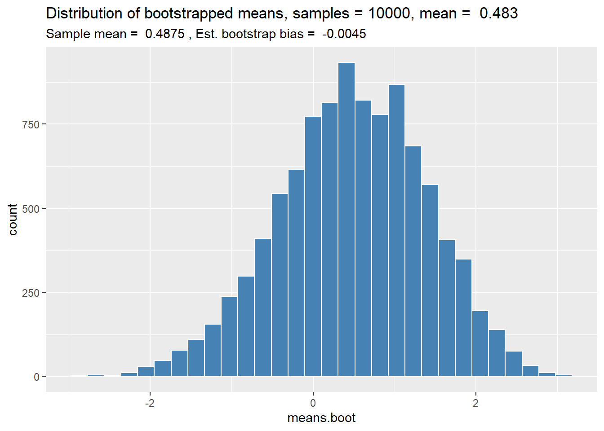

Kapitel 6 Inferenz für quantitative Daten
6.1 Parametrische Testverfahren
Parametrische Testverfahren setzen voraus, dass das zu untersuchende Beobachtungsmerkmal aus einer eindeutig definierten Verteilung, meist aus einer Normalverteilung stammt.
Übersicht zur Testwahl
Voraussetzung: Beobachtungsmerkmal stammt aus einer normalverteilten Population.
Eine Stichprobe
- \(n > 30 \rightarrow\) z-Test
- \(n \leq 30 \rightarrow\) Einstichproben-t-Test
zwei Stichproben
- verbundene (abhängige) Stichproben \(\rightarrow\) t-Test für verbundene Stichproben
- unabhängige Stichproben \(\rightarrow\) t-Test für unabhängige Stichproben (Welch-Test)
6.1.1 z-Test
Mit dem \(z\)-Test vergleichen wir den Mittelwert einer Stichprobe mit einem bekannten Populationsmittelwert (= Nullwert).
- Hypothesen \(H_0\) und \(H_A\) formulieren.
- \(H_0: \mu = Nullwert\)
- \(H_A: \mu \neq Nullwert\)
Signifikanzniveau \(\alpha\) festlegen (meist \(\alpha\) = 0.05).
Voraussetzungen (Normalverteilung, Stichprobenumfang) für Testwahl prüfen.
- \(n \geq 30\)
- Zufallsstichprobe
- Beobachtungsmerkmal muss quantitativ und annähernd normalverteilt sein.
(1-\(\alpha\))-Konfidenzintervall für Populationsparameter berechnen.
\[\begin{equation} CI_{1-\alpha} = \bar{x} \pm z_{\frac{alpha}{2}} \times SE_{\bar{x}} \tag{6.1} \end{equation}\]
\[\begin{equation} SE_{\bar{x}} = \frac{s}{\sqrt{n}} \tag{6.2} \end{equation}\]
# z für Berechnung des CI in R berechnen
z <- abs(qnorm(alpha/2))Wenn der Nullwert nicht im (1 - \(\alpha\)) Konfidenzintervall enthalten ist, ist der Unterschied zwischen \(\mu\) und Nullwert statistisch signifikant.
- Teststatistik berechnen.
\[\begin{equation} z = \frac{\bar{x} - Nullwert}{SE_{\bar{x}}} \tag{6.3} \end{equation}\]
- \(p\)-Wert für die Teststatistik berechnen.
# p-Wert für eine zweiseitige Hypothese
2 * (1 - pnorm(abs(z)))
# alternativ
2 * pnorm(-abs(z))
2 * pnorm(abs(z), lower.tail = FALSE)\(p\)-Wert mit Signifikanzniveau vergleichen und Entscheiden ob man \(H_0\) verwirft oder beibehält.
Ist der \(p\)-Wert kleiner als das Signifikanzniveau \(\alpha\), wird die \(H_0\) zu Gunsten der \(H_A\) verworfen.Ergebnis in allgemein verständlicher Sprache formulieren.
Beispiel: Bei 30 Personen wurde der Effekt eines Blutdruckmedikaments getestet. Der Hersteller gibt an, dass das Medikament den systolischen Blutdruck im Durchschnitt um 5 mmHg senkt. Der Effekt auf den systolischen Blutdruck wurde in der Variablen BDsys gespeichert.
set.seed(1)
BDsys <- rnorm(30, mean = -6, sd = 4) # simulierte Daten generieren
alpha <- 0.05 # Signifikanzniveau festlegen
# CI berechnen
mean.BDsys <- mean(BDsys) # Mittelwert für BDsys
sd.BDsys <- sd(BDsys) # Standardabweichung für BDsys
n.BDsys <- length(BDsys) # Stichprobenumfang für BDsys
SE.BDsys <- sd.BDsys / sqrt(n.BDsys) # SE für Mittelwert von BDsys
z.CI <- abs(qnorm(alpha / 2)) # z-Wert
CI <- mean.BDsys + c(-1, 1) * z.CI * SE.BDsys # Grenzen für CI berechnen
CI <- round(CI, 3) # Werte für CI auf 3 Stellen runden
CI.output <- paste((1 - alpha) * 100, "%-CI [", CI[1], ", ", CI[2], "]", sep = "")
print(CI.output) # CI ausgeben## [1] "95%-CI [-6.993, -4.347]"# Teststatistik berechnen
nullvalue <- -5 # Nullwert eingeben
z <- (mean.BDsys - nullvalue)/SE.BDsys # z-Wert berechnen
p <- 2 * pnorm(-abs(z)) # p-Wert für z berechnen (zweiseitig)
z <- round(z, 3) # z auf 3 Stellen runden
p <- round(p, 4) # p-Wert auf 4 Stellen runden
result <- paste("z = ", z, ", p = ", p, sep = "")
print(result)## [1] "z = -0.993, p = 0.3207"Ergebnis in allgemein verständlicher Sprache formulieren: Die Einnahme des Blutdrucksenkers reduziert den systolischen Blutdruck im Durchschnitt um -5.67, 95%-CI [-6.993, -4.347] mmHg. Der vom Hersteller angegebene Wert von durchschnittlich -5 mmHg ist in diesem 95%-Konfidenzintervall enthalten und es liegt keine Evidenz gegen die Nullhypothese (\(H_0: \mu = -5\)) vor, \(z\) = -0.993, \(p\) = 0.3207.
Hinweis: Für den \(z\)-Test existiert keine Funktion in R-base. Zum Überprüfen der
Ergebnisse kann die Funkion z.test() aus dem Package BSDA verwendet werden.
install.packages("BSDA")
library(BSDA)
z.test() # für Beschreibung ?z.test eingeben6.1.2 Einstichproben-\(t\)-Test
Wie beim \(z\)-Test vergleichen wir den Mittelwert einer Stichprobe mit einem bekannten Populationsmittelwert (= Nullwert). Bei kleinen Stichproben (\(n < 30\)) kann der \(z\)-Test allerdings nicht angewendet werden und wir verwenden den Einstichproben-\(t\)-Test.
Merke: Statistikprogramme wie R verwenden immer den \(t\)-Test.
- Hypothesen \(H_0\) und \(H_A\) formulieren.
- \(H_0: \mu = Nullwert\)
- \(H_A: \mu \neq Nullwert\)
Signifikanzniveau \(\alpha\) festlegen (meist \(\alpha\) = 0.05).
Voraussetzungen (Normalverteilung, Stichprobenumfang) für Testwahl prüfen.
- Zufallsstichprobe
- Beobachtungsmerkmal muss quantitativ und annähernd normalverteilt sein.
- Zufallsstichprobe
(1-\(\alpha\))-Konfidenzintervall für Populationsparameter berechnen.
\[\begin{equation} CI_{1-\alpha} = \bar{x} \pm t_{\frac{\alpha}{2},df} \times SE_{\bar{x}} \tag{6.4} \end{equation}\]
\[\begin{equation} SE_{\bar{x}} = \frac{s}{\sqrt{n}}, ~~ df = n-1 \tag{6.5} \end{equation}\]
# t für Berechnung des CI in R berechnen
t <- abs(qt(alpha/2), df = n - 1)Wenn der Nullwert nicht im (1 - \(\alpha\)) Konfidenzintervall enthalten ist, ist der Unterschied zwischen \(\mu\) und Nullwert statistisch signifikant.
- Teststatistik berechnen.
\[\begin{equation} t = \frac{\bar{x} - Nullwert}{SE_{\bar{x}}} \tag{6.6} \end{equation}\]
- \(p\)-Wert für die Teststatistik berechnen.
# p-Wert für eine zweiseitige Hypothese
2 * (1 - pt(abs(t), df = n - 1 ))
# alternativ
2 * pt(-abs(t), df = n - 1)
2 * pt(abs(t), , df = n - 1, lower.tail = FALSE)\(p\)-Wert mit Signifikanzniveau vergleichen und Entscheiden ob man \(H_0\) verwirft oder beibehält.
Ist der \(p\)-Wert kleiner als das Signifikanzniveau \(\alpha\), wird die \(H_0\) zu Gunsten der \(H_A\) verworfen.Ergebnis in allgemein verständlicher Sprache formulieren.
Beispiel: Bei 12 Personen wurde der Effekt eines Blutdruckmedikaments getestet. Der Hersteller gibt an, dass das Medikament den systolischen Blutdruck im Durchschnitt um 5 mmHg senkt. Der Effekt auf den systolischen Blutdruck wurde in der Variablen BDsys gespeichert.
set.seed(1)
BDsys <- rnorm(12, mean = -6, sd = 4) # simulierte Daten generieren
alpha <- 0.05 # Signifikanzniveau festlegen
# CI berechnen
mean.BDsys <- mean(BDsys) # Mittelwert für BDsys
sd.BDsys <- sd(BDsys) # Standardabweichung für BDsys
n.BDsys <- length(BDsys) # Stichprobenumfang für BDsys
SE.BDsys <- sd.BDsys / sqrt(n.BDsys) # SE für Mittelwert von BDsys
t.CI <- abs(qt(alpha / 2, df = n.BDsys - 1)) # t-Wert
CI <- mean.BDsys + c(-1, 1) * t.CI * SE.BDsys # Grenzen für CI berechnen
CI <- round(CI, 3) # Werte für CI auf 3 Stellen runden
CI.output <- paste((1 - alpha) * 100, "%-CI [", CI[1], ", ", CI[2], "]", sep = "")
print(CI.output) # CI ausgeben## [1] "95%-CI [-6.986, -2.865]"# Teststatistik berechnen
nullvalue <- -5 # Nullwert eingeben
t <- (mean.BDsys - nullvalue)/SE.BDsys # z-Wert berechnen
p <- 2 * pt(-abs(t), df = n.BDsys - 1) # p-Wert für z berechnen (zweiseitig)
t <- round(t, 4) # z auf 3 Stellen runden
p <- round(p, 4) # p-Wert auf 4 Stellen runden
result <- paste("t = ", t, ", p = ", p, sep = "")
print(result)## [1] "t = 0.0796, p = 0.938"Ergebnis in allgemein verständlicher Sprache formulieren: Die Einnahme des Blutdrucksenkers reduziert den systolischen Blutdruck im Durchschnitt um -4.925, 95%-CI [-6.986, -2.865] mmHg. Der vom Hersteller angegebene Wert von durchschnittlich -5 mmHg ist in diesem 95%-Konfidenzintervall enthalten und es liegt keine Evidenz gegen die Nullhypothese (\(H_0: \mu = -5\)) vor, \(t\) = 0.0796, \(df\) = 11, \(p\) = 0.938.
Einfacher geht es mit der R-Funktion t.test().
t.test(BDsys, mu = -5)##
## One Sample t-test
##
## data: BDsys
## t = 0.08, df = 11, p-value = 0.9
## alternative hypothesis: true mean is not equal to -5
## 95 percent confidence interval:
## -6.986 -2.865
## sample estimates:
## mean of x
## -4.9256.1.3 t-Test für verbundene Stichproben
Bei abhängigen Stichproben wird davon ausgegangen, dass die Messwerte in “Paaren” vorliegen, z.B.
- Gleiche Beobachtungseinheiten: Vorher-Nachher-Messungen, Messwiederholungen
- Unterschiedliche Beobachtungseinheiten (jedoch voneinander abhängig): Zwillingsstudien, Partner, matched pairs.
Parameter: \(\mu_{\Delta}\) = Mittelwert der paarweisen Differenzen in der Population
Punktschätzer: \(\bar{x}_{\Delta}\) = Mittelwert der paarweisen Differenzen in der Stichprobe
Teststatistik: \(t\)
- Hypothesen \(H_0\) und \(H_A\) formulieren.
- \(H_0: \mu_{\Delta} = 0\)
- \(H_A: \mu_{\Delta} \neq 0\) (zweiseitige \(H_A\))
Signifikanzniveau \(\alpha\) festlegen (meist \(\alpha\) = 0.05).
Voraussetzungen (Normalverteilung, Stichprobenumfang) für Testwahl prüfen.
- Zufallsstichprobe
- Paarweise Differenzen sind annähernd normalverteilt.
- \(n \geq 12\) oder grösser bei stark schiefen Verteilungen
- (1-\(\alpha\))-Konfidenzintervall für Populationsparameter berechnen.
\[\begin{equation} CI_{1-\alpha} = \bar{x}_{\Delta} \pm t_{\frac{\alpha}{2}, df} \times SE_{\bar{x}_{\Delta}} \tag{6.7} \end{equation}\]
\[\begin{equation} SE_{\bar{x}_{\Delta}} = \frac{s_{\Delta}}{\sqrt{n}}, ~~ df = n-1 \tag{6.8} \end{equation}\]
# t für Berechnung des CI in R berechnen
t <- abs(qt(alpha/2), df = n - 1)- Teststatistik berechnen.
\[\begin{equation} t = \frac{\bar{x}_{\Delta} - 0}{SE_{\bar{x}_{\Delta}}} \tag{6.9} \end{equation}\]
- \(p\)-Wert für die Teststatisik berechnen.
# p-Wert für eine zweiseitige Hypothese
2 * (1 - pt(abs(t), df = n - 1 ))
# alternativ
2 * pt(-abs(t), df = n - 1)
2 * pt(abs(t), , df = n - 1, lower.tail = FALSE)\(p\)-Wert mit Signifikanzniveau vergleichen und Entscheiden ob man \(H_0\) verwirft oder beibehält.
Ist der \(p\)-Wert kleiner als das Signifikanzniveau \(\alpha\), wird die \(H_0\) zu Gunsten der \(H_A\) verworfen.Ergebnis in allgemein verständlicher Sprache formulieren.
Beispiel: Körpergewicht in kg für 17 Probandinnen vor und nach einer Anorexie Therapie. Hat die Therapie einen signifikanten Effekt?
## create dataset (data extracted & converted from package PairedData::Anorexia)
anorexia <- data.frame(
id = seq(from = 1, to = 17, by = 1),
vor = c(38.0, 37.8, 39.0, 37.4, 39.3, 36.1, 34.9, 42.7, 33.3, 36.5, 37.0, 37.2, 35.2, 37.9, 40.8, 39.0, 39.6),
nach = c(43.2, 42.8, 41.5, 41.7, 45.5, 34.8, 34.8, 46.1, 43.0, 34.1, 35.3, 43.3, 41.1, 42.0, 42.5, 41.6, 44.5)
)
# erste 6 Beobachtungseinheiten im Datensatz anzeigen
head(anorexia)## id vor nach
## 1 1 38.0 43.2
## 2 2 37.8 42.8
## 3 3 39.0 41.5
## 4 4 37.4 41.7
## 5 5 39.3 45.5
## 6 6 36.1 34.8# paarweise Differenzen berechnen und in Variable anorexia$diff speichern
anorexia$diff <- anorexia$nach - anorexia$vor
head(anorexia)## id vor nach diff
## 1 1 38.0 43.2 5.2
## 2 2 37.8 42.8 5.0
## 3 3 39.0 41.5 2.5
## 4 4 37.4 41.7 4.3
## 5 5 39.3 45.5 6.2
## 6 6 36.1 34.8 -1.3## Verteilung der paarweisen Differenzen prüfen --------------------------------
qqnorm(anorexia$diff) # QQ-Plot erstellen
qqline(anorexia$diff)## CI für anorexia$diff berechnen ----------------------------------------------
alpha <- 0.05 # Signifikanzniveau festlegen
mean.diff <- mean(anorexia$diff) # Mittelwert der paarweisen Differenzen
sd.diff <- sd(anorexia$diff) # Standardabweichung der paarweisen Differenzen
n.diff <- length(anorexia$diff) # Stichprobenumfang ermitteln
SE.diff <- sd.diff/sqrt(n.diff) # Standardfehler berechnen
t.CI <- abs(qt(alpha / 2, df = n.diff - 1)) # t für CI-Berechnung bestimmen
CI.diff <- mean.diff + c(-1, 1) * t.CI * SE.diff # CI Grenzen berechnen
CI.diff <- round(CI.diff, 3) # CI-Grenzen auf drei Stellen runden
CI.output <- paste((1 - alpha) * 100, "%-CI [", CI.diff[1], ", ", CI.diff[2], "]")
CI.output## [1] "95 %-CI [ 1.631 , 4.969 ]"## p-Wert bestimmen
t <- (mean.diff - 0) / SE.diff
p <- 2 * pt(-abs(t), df = n.diff - 1)
t <- round(t, 4)
p <- round(p, 4)
result <- paste("t = ", t, ", p = ", p, sep = "")
print(result)## [1] "t = 4.1917, p = 0.0007"Ergebnis in allgemein verständlicher Sprache formulieren: Die Therapie führt bei anorektischen Patientinnen im Durchschnitt zu einer signifikanten Gewichtszunahme von 3.3 kg 95 %-CI [ 1.631 , 4.969 ], \(t\) = 4.1917, \(df\) = 16, \(p\) = 0.0007
Einfacher geht es mit der R-Funktion t.test().
t.test(anorexia$nach, anorexia$vor, paired = TRUE)##
## Paired t-test
##
## data: anorexia$nach and anorexia$vor
## t = 4.2, df = 16, p-value = 0.0007
## alternative hypothesis: true difference in means is not equal to 0
## 95 percent confidence interval:
## 1.631 4.969
## sample estimates:
## mean of the differences
## 3.36.1.4 t-Test für unabhängige Stichproben
Der \(t\)-Test dient der Prüfung von Mittelwertsdifferenzen zweier unabhängiger Stichproben (Unterschiedliche Beobachtungseinheiten, z.B. Vergleich von zwei Gruppen).
- Parameter: \(\mu_1 - \mu_2\), z.B. Differenz der Mittelwerte von zwei Populationen
- Punktschätzer: \(\bar{x}_1 - \bar{x}_2\) z.B. Differenz der Mittelwerte von zwei Stichproben
- Teststatistik: \(t\)
- Hypothesen:
- \(H_0: \mu_1 = \mu_2\) bzw. \(H_0: \mu_1 - \mu_2 = 0\)
- \(H_A: \mu_1 \neq \mu_2\) bzw. \(H_A: \mu_1 - \mu_2 \neq 0\) (zweiseitige \(H_A\))
Signifikanzniveau \(\alpha\) festlegen (meist \(\alpha\) = 0.05).
Voraussetzungen (Normalverteilung, Stichprobenumfang) für Testwahl prüfen.
- Daten stammen aus zwei unabhängigen Zufallsstichproben.
- Die Daten in beiden Zufallsstichproben sind annähernd normalverteilt.
- (1-\(\alpha\))-Konfidenzintervall für Populationsparameter berechnen.
\[\begin{equation} CI_{1-\alpha} = (\bar{x}_1 - \bar{x}_2) \pm t_{\frac{\alpha}{2},df} \times SE_{\bar{x}_1 - \bar{x}_2} \tag{6.10} \end{equation}\]
\[\begin{equation} df = n_1 + n_2 - 2 \tag{6.11} \end{equation}\]
# t für Berechnung des CI in R berechnen
t <- abs(qt(alpha/2), df = n1 + n2 - 2)- \(SE\) vereinfacht (für Berechnungen von Hand)
\[\begin{equation} SE_{\bar{x}_1 - \bar{x}_2} = \sqrt{\frac{s_1^2}{n_1}+\frac{s_2^2}{n_2}} = \sqrt{SE^2_{\bar{x}_1} + SE^2_{\bar{x}_2}} \tag{6.12} \end{equation}\]
- Gepoolte Standardabweichung
\[\begin{equation} s_{pooled} = \sqrt{\frac{(n_1-1) \cdot s_1^2+(n_2-1) \cdot s_2^2}{n_1+n_2-2}}$ \tag{6.13} \end{equation}\]
- \(SE\) für eine Mittelwertsdifferenz
\[\begin{equation} SE_{\bar{x}_1 - \bar{x}_2} = s_{pooled} \cdot \sqrt{\frac{1}{n_1}+\frac{1}{n_2}} \tag{6.14} \end{equation}\]
- Teststatistik berechnen.
\[\begin{equation} t = \frac{\bar{x}_1 - \bar{x}_2}{SE_{\bar{x}_1 - \bar{x}_2}} \tag{6.15} \end{equation}\]
- \(p\)-Wert für die Teststatisik berechnen.
# p-Wert für eine zweiseitige Hypothese
2 * (1 - pt(abs(t), df = n1 + n2 - 2))
# alternativ
2 * pt(-abs(t), df = n1 + n2 - 2)
2 * pt(abs(t), , df = n1 + n2 - 2, lower.tail = FALSE)\(p\)-Wert mit Signifikanzniveau vergleichen und Entscheiden ob man \(H_0\) verwirft oder beibehält. Ist der \(p\)-Wert kleiner als das Signifikanzniveau \(\alpha\), wird die \(H_0\) zu Gunsten der \(H_A\) verworfen.
Ergebnis in allgemein verständlicher Sprache formulieren.
Beispiel: Unterscheiden sich Studierende, die mit der Methode A lernen in ihrem Gesamtscore von Studierenden, die mit der Methode B lernen?
# Simulierte Daten erzeugen ----------------------------------------------------
set.seed(1)
score <- data.frame(
ID = seq(from = 1, to = 15, by = 1),
methode_A = rnorm(15, mean = 71.5, sd = 9.4),
methode_B = rnorm(15, mean = 84.7, sd = 8.3)
)
# Kennzahlen -------------------------------------------------------------------
library(dplyr)
score %>%
summarise(
mean.A = mean(methode_A),
sd.A = sd(methode_A),
mean.B = mean(methode_B),
sd.B = sd(methode_B)
) %>%
kbl(digits = 2) %>%
kable_styling(full_width = FALSE)| mean.A | sd.A | mean.B | sd.B |
|---|---|---|---|
| 72.45 | 9.57 | 85.23 | 7.1 |
# Verteilung der beiden Variablen prüfen
par(mfrow = c(1, 2))
qqnorm(score$methode_A, main = "QQ-Plot Methode A")
qqline(score$methode_A)
qqnorm(score$methode_B, main = "QQ-Plot Methode B")
qqline(score$methode_B)par(mfrow = c(1, 1))
# 95%-CI Grenzen berechnen -----------------------------------------------------
alpha <- .05
m.A <- mean(score$methode_A)
s.A <- sd(score$methode_A)
n.A <- length(score$methode_A)
m.B <- mean(score$methode_B)
s.B <- sd(score$methode_B)
n.B <- length(score$methode_B)
SE <- sqrt(s.A^2/n.A + s.B^2/n.B)
df <- n.A + n.B - 2
CI <- (m.B - m.A) + c(-1, 1) * abs(qt(alpha/2, df)) * SE
CI <- round(CI, 2)
CI.output <- paste((1 - alpha) * 100, "%-CI [", CI[1], ", ", CI[2], "]")
CI.output## [1] "95 %-CI [ 6.48 , 19.09 ]"# p-Wert bestimmen
t <- (m.A - m.B)/SE
p <- 2 * pt(-abs(t), df = df)
t <- round(t, 4)
p <- round(p, 5)
result <- paste("t = ", t, ", p = ", p, sep = "")
print(result)## [1] "t = -4.1552, p = 0.00028"Ergebnis in allgemein verständlicher Sprache formulieren: Die Studierenden, die mit der Methode B lernen, erzielen im Durchschnitt einen um 12.784, 95 %-CI [ 6.48 , 19.09 ] signifikant höheren Score als die Studierenden, die mit der Methode A lernen, \(t\) = -4.1552, \(df\) = 28, \(p\) = 0.0003.
Einfacher geht es in R mit der Funktion t.test(). Hinweis: Es existieren zwei Varianten des \(t\)-Test für unabhängige Stichproben:
- \(t\)-Test für zwei Stichproben mit gleichen Varianzen. Die oben gezeigten Formeln sind für diese Testvariante gültig.
- \(t\)-Test für zwei Stichproben mit ungleichen Varianzen (\(Welch\)-Test). Dieser Test führt einen Korrekturfaktor ein der v.a. die Anzahl Freiheitsgrade beeinflusst. Der \(Welch\)-Test wird in
Rstandardmässig durchgeführt und ich empfehle, immer diese Testvariante zu verwenden.
\(t\)-Test für unabhängige Stichproben mit ungleichen Varianzen: Welch-Test
\[\begin{equation} t = \frac{\bar{x}_1 - \bar{x}_2}{\sqrt{\frac{\hat{\sigma}_1^2}{n_1} + \frac{\hat{\sigma}_2^2}{n_2}}} \tag{6.16} \end{equation}\]
\[\begin{equation} df = \frac{(n_1-1) \cdot (n_2-1)}{(n_2-1) \cdot c^2 + (n_1-1) \cdot (1-c)^2} \tag{6.17} \end{equation}\]
\[\begin{equation} c = \frac{\frac{\hat{\sigma}_1^2}{n_1}}{\frac{\hat{\sigma}_1^2}{n_1}+\frac{\hat{\sigma}_2^2}{n_2}} \tag{6.18} \end{equation}\]
# t-Test für gleiche Varianzen
t.test(score$methode_B, score$methode_A, var.equal = TRUE)##
## Two Sample t-test
##
## data: score$methode_B and score$methode_A
## t = 4.2, df = 28, p-value = 0.0003
## alternative hypothesis: true difference in means is not equal to 0
## 95 percent confidence interval:
## 6.482 19.086
## sample estimates:
## mean of x mean of y
## 85.23 72.45# t-Test für ungleiche Varianzen, R-standard = Welch-Test
t.test(score$methode_B, score$methode_A)##
## Welch Two Sample t-test
##
## data: score$methode_B and score$methode_A
## t = 4.2, df = 26, p-value = 0.0003
## alternative hypothesis: true difference in means is not equal to 0
## 95 percent confidence interval:
## 6.458 19.110
## sample estimates:
## mean of x mean of y
## 85.23 72.456.2 Nicht-parametrische Testverfahren
Nichtparametrische Tests kommen zur Anwendung, wenn die Annahme der Normalverteilung fraglich ist. Für die Anwendung von nichtparametrischen Tests ist es unerheblich, aus welcher Art von Verteilung die Daten stammen. Deshalb werden diese Prüfverfahren auch als verteilungsfreie Verfahren bezeichnet. Die minimale Voraussetzung ist, dass die Prüfvariable mindestens qualitativ-ordinal skaliert ist.
Übersicht zur Testwahl
Eine Stichprobe \(\rightarrow\) Vorzeichentest
Zwei Stichproben
- verbundene (abhängige) Stichproben \(\rightarrow\) Wilcoxon-Vorzeichenrangtest, Vorzeichentest
- unabhängige Stichproben \(\rightarrow\) Mann-Whitney-U-Test
6.2.1 Vorzeichentest
Referenzen: King and Eckersley (2019)
Der Einstichproben-Test: Vergleicht einen Median (\(\tilde{x}\)) mit einem vorgegebenen Referenzmedian. \(H_0: \tilde{x} = Nullwert\). Prüfgrösse sind die Stichprobendaten.
Vorgehen:
- Vergleiche jeden Wert in der Stichprobe mit dem Nullwert. Für Werte die grösser als
der Nullwert sind, schreibe ein \(+\), für Werte die kleiner als der Nullwert sind, schreibe ein \(-\).
- Zähle die Anzahl \(+\) und \(-\).
- Berechne anhand der Regeln für die Binomialverteilung die Wahrscheinlichkeit für dieses oder ein extremeres Resultat unter der Annahme, dass die Nullhypothese zutrifft. Dies ist auch unsere Teststatistik!
- Wenn \(p\) die Wahrscheinlichkeit für einen Erfolg ist, ist \(1-p\) die Wahrscheinlichkeit für einen Misserfolg. \(n\) gibt die Anzahl der Versuche an und \(k\) die Anzahl der Erfolge.
\[\begin{equation} p(k, n) = {n \choose k}p^k(1-p)^{n-k} \tag{6.19} \end{equation}\]
- Vergleiche den p-Wert mit dem Signifikanzniveau. Beachte: Für eine zweiseitige \(H_A\) muss der p-Wert verdoppelt werden.
Beispiel: In einer neuen Produktionslinie soll die Kontamination eines Produkts mit Schadstoffen unter einem Grenzwert von 50 Einheiten liegen. Gemessen wurde die Kontamination an einer Stichprobe \(n\) = 10.
\(H_0: \tilde{x} = 50\), der Median der Stichprobe ist 50
\(H_A: \tilde{x} < 50\), der Median der Stichprobe ist kleiner als 50
# Für diesen Code müssen folgende Bibliotheken geladen werden ------------------
# library(dplyr)
# library(knitr)
# library(kableExtra)
## Kontaminationsdaten ---------------------------------------------------------
contamination <- tibble(
value = c(45.344, 48.655, 36.199, 54.881, 49.287,
49.336, 53.492, 40.702, 46.318, 31.303)
)
nullvalue <- 50
## Differenz zum Nullwert plus oder minus --------------------------------------
contamination <- contamination %>%
mutate(
diff = value - nullvalue,
sign = if_else(diff >= 0, "plus", "minus")
)
contamination %>%
kbl() %>%
kable_styling(full_width = FALSE)| value | diff | sign |
|---|---|---|
| 45.34 | -4.656 | minus |
| 48.66 | -1.345 | minus |
| 36.20 | -13.801 | minus |
| 54.88 | 4.881 | plus |
| 49.29 | -0.713 | minus |
| 49.34 | -0.664 | minus |
| 53.49 | 3.492 | plus |
| 40.70 | -9.298 | minus |
| 46.32 | -3.682 | minus |
| 31.30 | -18.697 | minus |
## Summe der positiven und negativen Differenzen -------------------------------
contamination %>%
group_by(sign) %>%
summarise(
n = n()
) %>%
kbl() %>%
kable_styling(full_width = FALSE)| sign | n |
|---|---|
| minus | 8 |
| plus | 2 |
## Wie gross ist die Wahrscheinlichkeit 8 oder mehr negative aus 10 zu ziehen
p.Wert <- dbinom(8, 10, .5) + dbinom(9, 10, .5) + dbinom(10, 10, .5)
## Tabelle für Resultat erstellen ----------------------------------------------
cont.result <- tibble(
Nr.successes = 8,
Nr.trials = 10,
p.H0 = .5,
p.Value = round(p.Wert, 4)
)
cont.result %>%
kbl(caption = "Vorzeichentest") %>%
kable_styling(full_width = FALSE)| Nr.successes | Nr.trials | p.H0 | p.Value |
|---|---|---|---|
| 8 | 10 | 0.5 | 0.0547 |
# Einfacher geht es mit R
binom.test(8, 10, .5, alternative = "greater")##
## Exact binomial test
##
## data: 8 and 10
## number of successes = 8, number of trials = 10, p-value = 0.05
## alternative hypothesis: true probability of success is greater than 0.5
## 95 percent confidence interval:
## 0.4931 1.0000
## sample estimates:
## probability of success
## 0.8Ergebnis in allgemein verständlicher Sprache formulieren: Der kritische Wert für unsere Teststatistik ist das Signifikanzniveau \(\alpha\). Ist der \(p-Wert\) grösser als \(\alpha\), haben wir keine Evidenz dafür, dass wir die Nullhypothese verwerfen können. Es liegt nicht ausreichend Evidenz dafür vor, dass der Median der Kontamination signifikant tiefer ist, als der vorgegebene Grenzwert.
Der Vorzeichentest kann auch als Wilcoxon Vorzeichenrangtest mit dem Parameter mu = nullvalue durchgeführt werden. Das Resultat ist annähernd das selbe.
wilcox.test(x, mu = Nullwert)# Wilcoxon-Vorzeichenrangtest
wilcox.test(x = contamination$value, mu = nullvalue, alternative = "less")##
## Wilcoxon signed rank exact test
##
## data: contamination$value
## V = 11, p-value = 0.05
## alternative hypothesis: true location is less than 50
6.2.2 Wilcoxon-Vorzeichenrangtest
Quellen: Leonhart (2013), Mi et al. (2022)
Wilcoxon Vorzeichenrang-Test für gepaarte Daten: \(H_0: \tilde{x}_{\Delta} = 0\), Prüfgrösse \(\tilde{x}_{\Delta}\) = Paarweise Differenzen Stichprobe B minus Stichprobe A.
Voraussetzungen:
- quantitative oder ordinal skalierte Daten
- unabhängige Beobachtungseinheiten
- Daten sind annähernd symmetrisch um den Median verteilt.
Vorgehen:
- Paarweise Differenzen nach Grösse sortieren. Die Vorzeichen werden für die Rangbildung ignoriert, das Vorzeichen wird notiert.
- Rangsummen für positive und negative Differenzen bilden.
\[T_+ = \sum Ränge ~mit ~positivem ~Vorzeichen\]
\[T_- = \sum Ränge ~mit ~negativem ~Vorzeichen\]
- Die Teststatistik \(T\) ist die kleinere der beiden Rangsummen.
- Kritischen Wert \(T_{krit}\) in Vorzeichen-Rang-Tabelle nachschlagen. Wenn \(T < T_{krit}\) wird \(H_0\) verworfen.
Normalapproximation
- Für grössere Stichproben (Faustregel: \(n > 25\), je nach Autor etwas andere Angaben) ist \(T\) annähernd normalverteilt.
\[\begin{equation} E(T) = \mu_T = \frac{n \times (n + 1)}{4} \tag{6.20} \end{equation}\]
\[\begin{equation} \sigma_T^2 = \frac{n \times (n + 1) \times (2n + 1)}{24} \tag{6.21} \end{equation}\]
Korrektur für Bindungen
Wenn mehrere Bindungen vorliegen, ist ein besserer Schätzer für die Varianz
\[\begin{equation} \sigma^2 = \frac{n \times (n + 1) \times (2n + 1)}{24} - \frac{1}{48} \sum_t(f_t^3 - f_t) \tag{6.22} \end{equation}\]
wobei:
- \(t\) = Anzahl Sets von Bindungen
- \(f_t\) = Häufigkeit von Rang \(t\)
Teststatistik
\[\begin{equation} z = \frac{T - \mu_T}{\sigma_T} \tag{6.23} \end{equation}\]
Die Approximation einer diskreten Verteilung mittels einer kontinuierlichen Verteilung kann bei \(n\) < 60 durch eine Kontinuitätskorrektur bei der Berechnung von \(z\) berücksichtigt werden:
\[\begin{equation} z = \frac{|T - \mu_T|-.5}{\sigma_T} \tag{6.24} \end{equation}\]
Beispiel: Zur Überprüfung einer neuen Unterrichtsmethode wurde in einer abhängigen Stichprobe vor und nach einem Sommerlager die Leistung im Fach Statsitik erhoben. Während des Ferienaufenthalts fand ein integrierter Nachhilfekurs in Statistik statt. Die Messung der Statsitikleistung ist im Datensatz prfg gespeichert.
# Für diesen Code müssen folgende Bibliotheken geladen werden ------------------
# library(dplyr)
# library(knitr)
# library(kableExtra)
## Prüfergebnisse --------------------------------------------------------------
prfg <- tibble(
ID = seq(from = 1, to = 10, by = 1),
vorher = c(22, 26, 12, 20, 22, 26, 22, 24, 40, 40),
nachher = c(40, 22, 28, 30, 16, 38, 24, 32, 20, 26)
)
## Paarweise Differenzen berechnen ---------------------------------------------
prfg <- prfg %>%
mutate(
diff = nachher - vorher
)
## Nach Rängen sortieren -------------------------------------------------------
prfg <- prfg %>%
mutate(
rang = rank(abs(diff))
)
## Rangsummen für T berechnen --------------------------------------------------
T.plus <- prfg %>%
filter(diff > 0) %>%
summarise(
value = sum(rang)
)
T.minus <- prfg %>%
filter(diff < 0) %>%
summarise(
value = sum(rang)
)
## Testgrösse ist das kleinere T -----------------------------------------------
T <- min(T.plus$value, T.minus$value)
## p-Wert berechnen ------------------------------------------------------------
p <- 2 * psignrank(T, n = length(prfg$diff))
## Tabelle für Output erstellen ------------------------------------------------
prfg.result <- tibble(
T.plus = T.plus$value,
T.minus = T.minus$value,
T = T,
T.krit = 8,
p.Wert = p
)
## Tabelle anzeigen ------------------------------------------------------------
# library(knitr)
# library(kableExtra)
prfg.result %>%
kbl(digits = 3, caption = "Wilcoxon Vorzeichenrangtest") %>%
kable_styling(full_width = FALSE)| T.plus | T.minus | T | T.krit | p.Wert |
|---|---|---|---|---|
| 33 | 22 | 22 | 8 | 0.625 |
## Überprüfung mit wilcox.test() -----------------------------------------------
wilcox.test(prfg$vorher, prfg$nachher, paired = TRUE, correct = FALSE)##
## Wilcoxon signed rank exact test
##
## data: prfg$vorher and prfg$nachher
## V = 22, p-value = 0.6
## alternative hypothesis: true location shift is not equal to 0Anmerkungen
- Es wird im Beispiel keine Kontinuitätskorrektur oder eine Korrektur für Bindungen verwendet.
- \(T.krit\) wurde manuell der Wilcoxon Vorzeichenrang-Tabelle entnommen (\(n\) = 10).
- Der p-Wert wurde mit der Funktion
psignrank(T, n = n)berechnet.
- Der berechnete \(T\)-Wert muss gleich oder kleiner als der kritische \(T\)-Wert sein, damit ein signifikanter Unterschied belegt werden kann.
- In
Rwird \(T\) als \(V\) angegeben.
Interpretation: Der beobachtete \(T\)-Wert unterschreitet den kritischen \(T\)-Wert nicht, somit ist der Unterschied zwischen den Testzeitpunkten nicht signifikant und der Sommerkurs hat keinen Effekt auf die Leistung der Schüler:innen in Statistik.
6.2.3 Mann-Whitney-U-Test
Referenz: King and Eckersley (2019), Leonhart (2013)
Wird auch Wilcoxon Rangsummen-Test genannt.
Der U-Test von Mann-Whitney dient dem Vergleich der zentralen Tendenz zweier Stichproben.
- \(H_0: P(X > Y) = P(Y > X)\), m.a.W: Es besteht eine 50%-Wahrscheinlichkeit dafür, dass ein zufällig gezogener Wert aus \(X\) grösser ist als ein zufällig gezogener Mittelwert aus \(Y\) (und umgekehrt)
- \(H_0: P(X > Y) \neq P(Y > X)\), m.a.W: Die Wahrscheinlichkeit ist nicht 50%, dass ein zufällig gezogener Wert aus \(X\) grösser ist als ein zufällig gezogener Mittelwert aus \(Y\) (und umgekehrt)
Voraussetzungen
- quantiative oder ordinal skalierte Daten
- zwei unabhängige Zufallsstichproben
Idee: Die Werte beider Stichproben werden in einer einzige Rangordnung sortiert. Für \(H_0\) wird erwartet, dass \(x < y\) gleich häufig ist wie \(y < x\).
Teststatistik
- \(U_1\) und \(U_2\) gibt jeweils an, wie viele Rangwerte der anderen Variablen insgesamt niedriger sind.
- Die Teststatistik \(U\) ist der kleinere Wert von den beiden \(U_1\) und \(U_2\).
- \(U_1\) und \(U_2\) werden wie folgt berechnet:
\[\begin{equation} U_1 = n_1 \times n_2+\frac{n_1 \times (n_1+1)}{2} - T_1 \tag{6.25} \end{equation}\]
\[\begin{equation} U_2 = n_1 \times n_2+\frac{n_2 \times (n_2+1)}{2} - T_2 \tag{6.26} \end{equation}\]
wobei, \(n_1\) und \(n_2\) die jeweiligen Stichprobenumfänge und \(T_1\) und \(T_2\) die Rangsummen der Gruppen 1 und 2 sind.
Für den Signifikanztest wird nun der kleinere der beiden bestimmten \(U\)-Werte verwendet.
2 * (1 - pwilcox(U, m = n1, n = n2, lower.tail = FALSE))Normalapproximation
Für grosse Stichprobenumfänge (\(n_1\) oder \(n_2\) > 10) ist \(U\) annähernd normal verteilt mit:
\[\begin{equation} E(U) = \mu_U = \frac{n_1 \times n_2}{2} \tag{6.27} \end{equation}\]
\[\begin{equation} \sigma_U^2 = \frac{n_1 \times n_2 \times (n_1 + n_2 + 1)}{12} \tag{6.28} \end{equation}\]
Teststatistik
\[\begin{equation} z = \frac{U - E(U)}{\sigma_U} \tag{6.29} \end{equation}\]
Differieren die beiden Stichprobenumfänge \(n_1\) und \(n_2\) stark, so empfiehlt sich eine Kontinuitätskorrektur des \(U\)-Werts.
\[\begin{equation} z = \frac{|U - E(U)|-0.5}{\sigma_U} \tag{6.29} \end{equation}\]
Wenn eine grosse Zahn von verbundenen Rängen vorliegt (zwei Werte in einer Spalte belegen den selben Rang), wird die Standardabweichung von \(U\) wie folgt korrigiert:
\[\begin{equation} \sigma_{UCorr} = \sqrt{\frac{n_1 \times n_2}{n(n-1)}} \times \sqrt{\frac{n^3-n}{12}-\sum_{i=1}^k\frac{t_i^3-t_i}{12}} \tag{6.30} \end{equation}\]
wobei
- \(n = n_1 + n_2\)
- \(t_i\) = Anzahl einzelner Werte, welche den Rang \(i\) teilen.
- \(k\) = Anzahl gebundene Ränge
in R
wilcox.test(x, y, alternative = "two.sided", paired = FALSE)Beispiel: Erreichen Studierende, die während einer Woche täglich 30 Minuten Statistikübungen machen, bessere Noten in einer Statistikprüfung? Für diese Studie wurden 15 Studierende zufällig ausgewählt und zufällig den Gruppen INT (n = 8) und CON (n = 7) zugeteilt. Beide Gruppen besuchten die Statistikvorlesung. Die Studierenden der Gruppe INT machten zusätzlich während einer Woche täglich 30 Min. Statistikübungen, die Gruppe CON machte keine Statistikübungen. Nach einer Woche wurde ein Statistiktest durchgeführt, der mit 0 bis 100 Punkten bewertet wurde.
# Für diesen Code müssen folgende Bibliotheken geladen werden ------------------
# library(dplyr)
# library(knitr)
# library(kableExtra)
# Datensatz erstellen ----------------------------------------------------------
statex <- tibble(
Gruppe = c(rep("INT", 8), rep("CON", 7)),
Punkte = c(89, 92, 94, 96, 91, 99, 84, 90, 88, 93, 95, 75, 72, 80, 81)
)
# Prüfungsergebnisse nach Rängen sortieren
statex <- statex %>%
mutate(
Rang = 16 - rank(Punkte, ties.method = "average" )
)
statex %>%
arrange(Rang) %>%
kbl(digits = 2, caption = "Statistikresultate mit Rängen") %>%
kable_classic(full_width = FALSE)| Gruppe | Punkte | Rang |
|---|---|---|
| INT | 99 | 1 |
| INT | 96 | 2 |
| CON | 95 | 3 |
| INT | 94 | 4 |
| CON | 93 | 5 |
| INT | 92 | 6 |
| INT | 91 | 7 |
| INT | 90 | 8 |
| INT | 89 | 9 |
| CON | 88 | 10 |
| INT | 84 | 11 |
| CON | 81 | 12 |
| CON | 80 | 13 |
| CON | 75 | 14 |
| CON | 72 | 15 |
# Rangsummen berechnen
rangsummen <- statex %>%
group_by(Gruppe) %>%
summarise(
Rangsumme = sum(Rang)
)
T1 <- rangsummen$Rangsumme[1] # Rangsumme für Gruppe CON
T2 <- rangsummen$Rangsumme[2] # Rangsumme für Gruppe INT
# U berechnen
n1 <- 7
n2 <- 8
U1 <- n1 * n2 + (n1 * (n1 + 1))/2 - T1
U2 <- n1 * n2 + (n2 * (n2 + 1))/2 - T2
U <- min(U1, U2)
# p-Wert berechnen
p <- 2 * (1 - pwilcox(U, m = n1, n = n2, lower.tail = FALSE))
# Resultat als Tabelle ausgeben
result <- tibble(
T1 = T1,
T2 = T2,
n1 = n1,
n2 = n2,
U1 = U1,
U2 = U2,
U = U,
p = round(p, 4)
)
result %>%
kbl(digits = 4, caption = "Mann-Whitney-U-Test") %>%
kable_styling()| T1 | T2 | n1 | n2 | U1 | U2 | U | p |
|---|---|---|---|---|---|---|---|
| 72 | 48 | 7 | 8 | 12 | 44 | 12 | 0.0721 |
# Vergleich mit wilcox.test()
wilcox.test(
Punkte ~ Gruppe, data = statex,
paired = FALSE,
alternative = "two.sided")##
## Wilcoxon rank sum exact test
##
## data: Punkte by Gruppe
## W = 12, p-value = 0.07
## alternative hypothesis: true location shift is not equal to 0Interpretation: Studierende, die während einer Woche täglich 30 Minunten Statistikübungen machen, erreichten in unserer Studie im Durchschnitt eine um 8.45 Punkte höhere Punktzahl in der Statistikprüfung, Mann-Whitney-U = 12, p = 0.0721. Damit liegt keine Evidenz dafür vor, dass sich die Prüfungsergebnisse im Durchschnitt zwischen den beiden Gruppen unterscheiden.
6.3 Bootstrap-Methode
Hauptquelle: Moore, McCabe, and Craig (2021), Kap. 16
Bootstrap-Methoden sind eine Alternative zu nichtparametrischen Tests, wenn die Voraussetzungen für parametrische Tests nicht erfüllt sind. Die Berechnung von Bootstrap-Intervallen und Permutationstests setzt erhebliche Rechenleistung voraus, weshalb diese Methoden erst in jüngerer Zeit Verbreitung finden.
6.3.1 Vorgehen
Bootstrapping ist eine Möglichkeit, die Stichprobenverteilung aus einer einzigen Stichprobe annähernd zu ermitteln.
- Zufallsstichprobe im Umfang \(n\) aus der zu untersuchenden Population ziehen.
- Resampling: \(B\) Stichproben im Umfang \(n\) aus der Zufallsstichprobe ziehen. Dabei wird nach jedem Zug wieder “zurückgelegt”, d.h. jede Beobachtungseinheit in der Stichprobe kann mehr als einmal gezogen werden. \(B\) hat in der Regel einen Wert von > 10’000.
- Bootstrapvertreilung: Die Bootstrapverteilung einer Kennzahl, z.B. \(\bar{x}\), repräsentiert die Werte, welche die Kennzahl in allen \(B\) Resamples angenommen hat, also die Stichprobenverteilung der Kennzahl.
\[\begin{equation} \bar{x}_{boot} = \frac{1}{B}\sum{\bar{x}^*} \tag{6.31} \end{equation}\]
\[\begin{equation} SE_{boot} = \sqrt{\frac{1}{B-1}\sum(\bar{x}^* - \bar{x}_{boot})^2} \tag{6.32} \end{equation}\]
- \(B\): Anzahl Resampling-Stichproben
- \(\bar{x}^*\): Mittelwerte von jeder Resampling-Stichprobe
- \(\bar{x}_{boot}\): Mittelwert der Resampling-Mittelwerte
- \(SE_{boot}\): Standardfehler für \(\bar{x}_{boot}\); ist identisch mit der Standardabweichung der Verteilung von \(\bar{x}^*\)
Konfidenzintervall für den Mittelwert berechnen
\[\begin{equation} Est.Bias = \bar{x}_{Stichprobe} - \bar{x}_{boot} \tag{6.33} \end{equation}\]
- Bootstrap-z-CI: Wenn die Bootstrap-Verteilung annähernd normalverteilt und der Bias-Schätzer \(Est.Bias\) klein sind:
\[\begin{equation} CI_{boot} = \bar{x}_{boot} \pm z_{1-\frac{\alpha}{2}} \times SE_{boot} \tag{6.34} \end{equation}\]
- Bootstrap-Perzentilen-CI: Wenn die Bootstrap-Verteilung schief und der Bias-Schätzer klein sind
\[\begin{equation} CI_{boot} = [P_{.025, \bar{x}^*}, P_{.975, \bar{x}^*}] \tag{6.35} \end{equation}\]
- Bootstrap bias-corrected accelerated interval (BCa)
Das BCa ist eine Modifikation des Perzentilen-CI und sollte immer angewandt werden, wenn die Software dies erlaubt (siehe package boot unten)
# Source: StatQuest https://youtu.be/N4ZQQqyIf6k
set.seed(1234)
# simulated data ---------------------------------------------------------------
drug <- c(-3.6, -2.8, -1.5, 1.4, 1.8, 2.2, 2.8, 3.6)
psych::describe(drug)## vars n mean sd median trimmed mad min max range skew kurtosis se
## X1 1 8 0.49 2.73 1.6 0.49 2.37 -3.6 3.6 7.2 -0.38 -1.76 0.96# 1000 means and medians from 10000samples with replacement --------------------
mean.samples <- vector()
for (i in 1:10000){
sample <- sample(drug, size = length(drug), replace = TRUE)
mean.samples[i] <- mean(sample)
}
bootstrap <- tibble(
m.samples = mean.samples
)
# plot histogram and mean ------------------------------------------------------
ggplot(bootstrap, aes(x = m.samples)) +
geom_histogram(fill = "steelblue", color = "white") +
ggtitle(paste("bootstrapped means, samples = 10000, mean = ",
round(mean(bootstrap$m.samples), 4)),
subtitle = paste("Sample mean = ", round(mean(drug), 4),
", Est. bootstrap bias = ",
round(mean(drug)-mean(bootstrap$m.samples), 3)))# calculate CI -----------------------------------------------------------------
# Bootstrap-z-Intervall
alpha <- 0.05
M <- mean(bootstrap$m.samples)
SE <- sd(bootstrap$m.samples)
CI.z <- M + c(-1, 1) * abs(qnorm(alpha/2)) * SE
CI.z## [1] -1.300 2.259# Bootstrap-Perzentilen-Intervall
CI.perc.lo <- qnorm(.025,
mean = mean(bootstrap$m.samples),
sd = sd(bootstrap$m.samples))
CI.perc.hi <- qnorm(.975,
mean = mean(bootstrap$m.samples),
sd = sd(bootstrap$m.samples))
CI.perc <- c(CI.perc.lo, CI.perc.hi)
CI.perc## [1] -1.300 2.259# Hypothesis-Test --------------------------------------------------------------
# if H0 was true, we would expect the mean value to be 0
# shift data to represent the nullhypothesis -----------------------------------
drug.h0 <- drug - mean(drug)
# 1000 means from 1000 samples with replacement from normalised data -----------
# show how the mean varies when H0 were true
mean.samples <- vector()
for (i in 1:10000){
sample <- sample(drug.h0, size = length(drug.h0), replace = TRUE)
mean.samples[i] <- mean(sample)
}
bootstrap$m.samples.norm <- mean.samples
# plot histogram and mean ------------------------------------------------------
ggplot(bootstrap, aes(x = m.samples.norm)) +
geom_histogram(fill = "steelblue", color = "white", binwidth = .2) +
geom_vline(xintercept = -.49, color = "red") +
geom_vline(xintercept = .49, color = "red") +
ggtitle(paste("bootstrapped means, samples = 10000, M = ",
round(mean(bootstrap$m.samples.norm), 4)),
subtitle = paste("boundaries two.sided = ", round(mean(drug), 4)))# calculate p-value ------------------------------------------------------------
# What is the probability for observing a mean Value of less than -.49 and more
# than .49 under H0
M.drug <- mean(drug)
# pnorm(M.drug) - pnorm(-M.drug) # prob for finding a mean value between -.49 and .49
# pnorm(-M.drug) # prob for finding a mean value < -.49
# pnorm(M.drug, lower.tail = FALSE) # prob for finding a mean Value > .49
# prob finding a p-value of .49 or more extreme two.sided
p <- pnorm(-M.drug) + pnorm(M.drug, lower.tail = FALSE)
paste("p =", round(p, 3))## [1] "p = 0.626"6.3.2 Bootstrapping in R
Für Bootstrap-Methoden steht das package boot zur Verfügung.
# source: https://www.statmethods.net/advstats/bootstrapping.html
# install.packages("boot")
library(boot)
samplemean <- function(x, d) {
return(mean(x[d]))
}
boot.drug <- boot(drug, statistic = samplemean, R = 10000)
boot.drug##
## ORDINARY NONPARAMETRIC BOOTSTRAP
##
##
## Call:
## boot(data = drug, statistic = samplemean, R = 10000)
##
##
## Bootstrap Statistics :
## original bias std. error
## t1* 0.4875 0.0009487 0.8974plot(boot.drug, col = "blue")
boot.ci(boot.drug)## BOOTSTRAP CONFIDENCE INTERVAL CALCULATIONS
## Based on 10000 bootstrap replicates
##
## CALL :
## boot.ci(boot.out = boot.drug)
##
## Intervals :
## Level Normal Basic
## 95% (-1.272, 2.245 ) (-1.162, 2.288 )
##
## Level Percentile BCa
## 95% (-1.312, 2.137 ) (-1.475, 2.013 )
## Calculations and Intervals on Original Scale